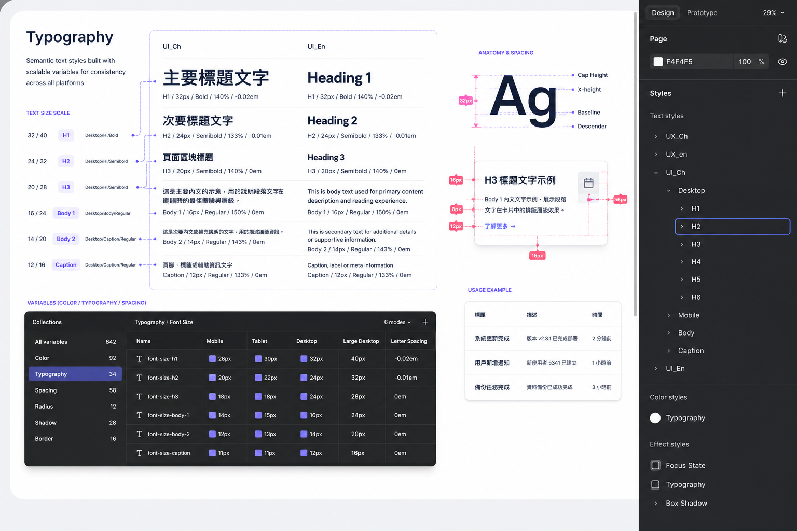

以設計系統思維，
駕馭高客製化專案
這些專案的客製化程度極高，難以沉澱成一套可直接複用的通用資產。但我把「設計系統」的核心紀律——元件防呆與語意化命名——內化進每一個案子，確保專案內部的一致性與高效的工程交接。
醫療後台平台與房仲招募前台，是兩個業務邏輯與視覺語言截然不同的專案。它們的客製化程度極高，硬要套用同一套通用元件庫反而會綁手綁腳——因此這裡的重點不是「產出一套可共用的資產」，而是把建置設計系統的方法論與紀律，落實到每一個獨立專案之中。
用 Variants 確保元件防呆、用 Design Tokens 打通設計與工程的語言。讓每個案子即使各自獨立、無法共用元件庫，內部依然嚴謹、一致、好交接。這是一種能跨越任何專案的「設計紀律」，而非一份會過時的素材庫。
兩道紀律，貫穿每一個專案。
不論案子多麼客製，我都堅持把這兩件事做到位——它們不依賴任何現成資產，只依賴方法。

用結構，取代記憶力
在每個專案內，我利用 Figma 的 Variants（變體）與 Properties（屬性），將分散的按鈕與輸入框狀態收攏為單一 Master Component。透過控制面板切換 Hover / Disabled、是否帶 Icon 等狀態，確保專案內任何人拉出的元件都 100% 符合規範，從源頭杜絕「同一個按鈕長得不一樣」的混亂。這套防呆紀律不依賴通用素材庫，搬到任何新專案都能立刻重建。

讓設計與工程說同一種語言
引入 Design Tokens與 8pt 網格系統。元件不再以 color-green 這種「描述外觀」的方式命名，而是改用 sys.color.brand.primary 這種「描述用途」的語意化代碼，與前端 CSS / JSON 變數完美對齊。即使每個專案各自獨立，交接時工程師都能用同一套規則理解設計意圖，大幅降低切版誤差與後續維護成本。
系統思維，
不一定是
一套系統。
很多人以為設計系統就是「做一套元件庫丟給大家用」。但在高度客製化的真實專案裡，硬塞一套通用資產往往水土不服。我的體會是：設計系統真正的價值，在於它背後的紀律與方法論——元件防呆、語意化命名、嚴謹的交接標準——這些東西即使在無法共用元件庫的專案裡，依然能發揮巨大價值。
這套方法論已實際落實於作品一（醫療後台）與作品二（房仲前台）。正因為導入了這套紀律，作品一複雜的 20 多張臨床表單才能在 1 週內完成視覺對齊，幫研發團隊省下約 30% 的交接溝通時間。
它證明了我具備大廠成熟設計團隊最看重的「規模化思維（Scalability）」與「工程同理心」——能用系統化的全局觀，在最混亂、最客製的專案裡建立秩序。這是我在專業 UI/UX 團隊中推動 DesignOps 的核心優勢。